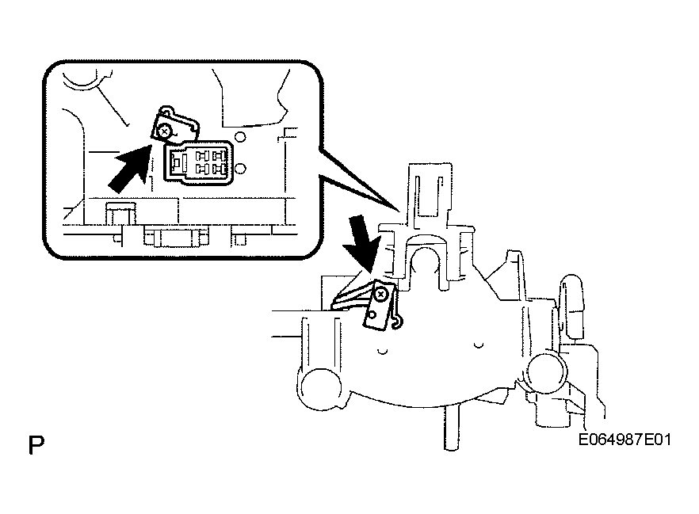

Heater Switch: Installation
INSTALL HEATER SWITCH ASSEMBLY
Install the heater switch with the 2 screws.
INSTALL HEATER CONTROL AND ACCESSORY ASSEMBLY
Install the heater control and accessory (see
INSTALLATION
).
Fig 1: Installing Heater Switch With 2 Screws

Courtesy of © TOYOTA, LICENSE AGREEMENT TMS1002